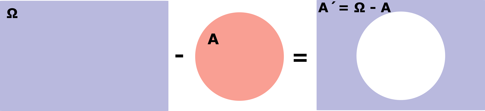

Pojem pravdepodobnosť je nám známy už z bežného života. Ak sme o niečom pevne presvedčení, hovoríme, že je to isté na 100%. Ak však o niečom prehlásime, že máme 95% istotu, pripúšťame, že zo 100 prípadov asi v piatich dané tvrdenie neplatí.
V matematike vyjadrujeme pravdepodobnosť nejakej udalosti nie v percentách, ale odpovedajúcim číslom z intervalu <0, 1>. Teda nehovoríme o pravdepodobnosti 57%, 13%, 20% a pod. ale o 0.57, 0.13, 0.2 a pod.
Spočiatku budeme pracovať s tým azda najjednoduchším modelom: budeme predpokladať, že experiment má konečný počet možných výsledkov, ktoré sú rovnako pravdepodobné.
Definícia 1.1.
Nech Ω = {w1, w2, ....wn} je neprázdna množina. Podmnožiny Ω budeme nazývať tiež udalosťami; špeciálne ∅ sa nazýva nemožná udalosť, Ω sa nazýva istá udalosť. Pravdepodobnosťou P(A) udalosti A rozumieme číslo
P(A) = m⁄n , kde m je počet prvkov množiny A (počet prvkov prázdnej množiny ∅ je 0) a n je počet prvkov množiny Ω.
Príklad 1.1.
Vykonajme hod pravidelnou kockou, na stenách ktorej je postupne jedna, dve tri, ..., šesť bodiek. Aká je pravdepodobnosť udalosti, že na padnutej stene bude párny počet bodiek?
Ako prvé si určime množinu Ω, čiže množinu všetkých možných výsledkov pokusu.
(naklikaj si všetky rôzne možnosti, ktoré môžu padnúť na kocke)
Ďalej si určime množinu A, ktorá zodpovedá udalosti, že na hracej kocke padne párne číslo.
Podľa definície platí:
Príklad 1.2.
V hromade hracích kariet je 32 dobre zamiešaných kariet. Vyberieme 3. Aká je pravdepodobnosť toho, že všetky tri budú červené? (každá farba sa vyskytuje v hromade práve osemkrát)
Množinu Ω si určíme ako: všetky rôzne trojice kariet, vybrané spomedzi 32 kariet.
Ako je známe, trojprvkových kombinácií z 32 prvkov možno vytvoriť celkom:
Z toho vyplýva, že množina všetkých udalostí je:
Ω = {w1, w2, ..., w4 960},
kde wi je ľubovoľná trojica kariet vybraná z hromady 32 kariet
Ω = {w1, w2, ..., w4 960}
Rovnakým spôsobom určíme množinu A, ktorá označuje udalosť kedy vyberáme ľubovoľné 3, práve červené karty z 32 kariet. (zo zadania vieme, že v balíčku je 8 červených kariet)
Čiže počet prvkov množiny A bude: (označ možnosť, ktorá je podľa teba správna)
Keď už máme definovánú množinu Ω a aj množinu A, vieme vypočítať výsledok príkladu.
Ω = {w1, w2, ..., w4 960}
kde wi je ľubovolná trojica kariet vybratá z hromady 32 kariet
A = {u1, u2, ..., u56}
kde ui je ľubovolná trojica červených kariet vybratá z hromady 32 kariet
Potom z definície platí:
Príklad 1.3.
Do stanice vchádza vlak s dvanástimi vozňami. Nastupuje doňho 7 cestujúcich. Aká je pravdepodobnosť toho, že všetci siedmi pocestujú v rôznych vagónoch? (t. j. v žiadnom vagóne nepocestuje viac ako jeden z nich)
Rozmiestnite všetkých cestujúcich tak, aby všetci cestujúci sedeli v rôznych vagónoch.
1. cestuj. | 2. cestuj. | 3. cestuj. | 4. cestuj. | 5. cestuj. | 6. cestuj. | 7. cestuj. |
||||||
| * | * | * | * | * | * |
Všetkých 12 vozňov je prázdnych a prvý cestujúci chce nastúpiť do vlaku.
Do koľkých rôznych vagónov môže nastúpiť aby neporušil podmienku, že všetci cestujúci musia sedieť v rôznych vagónoch:
Ostalo nám 11 voľných vozňov a jeden obsadený. Druhý cestujúci chce nastúpiť do vlaku.
Do koľkých rôznych vagónov môže nastúpiť aby neporušil podmienku, že všetci cestujúci musia sedieť v rôznych vagónoch:
Ostalo nám už len 10 voľných vozňov a dva obsadené. Tretí cestujúci chce nastúpiť do vlaku.
Do koľkých rôznych vagónov môže nastúpiť aby neporušil podmienku, že všetci cestujúci musia sedieť v rôznych vagónoch:
Teraz skús sám dopísať možnosti pre ostatných cestujúcich.
Správne, čiže A je počet všetkých rôznych rozmiestnení, kde každé dve osoby sú vždy v dvoch rôznych vagónoch.
|A| = 12 * 11 * 10 * 9 * 8 * 7 * 6
Rovnakým spôsobom sa dopracujeme k množine Ω, ktorá zahŕňa všetky rôzne rozmiestnenia kde dve osoby môžu byť v dvoch rovnakých vagónoch.
|Ω| = 12 * 12 * 12 * 12 * 12 * 12 * 12
Príklad 1.4.
Predpokladajme, že v sérií 100 výrobkov je 5 chybných. Vyberme spomedzi tých 100 výrobkov náhodne 10. Aká je pravdepodobnosť toho, že medzi týmito desiatimi výrobkami budú práve tri chybné?
Množina Ω obsahuje všetky desaťmiestne výbery výrobkov spomedzi 100 prvkov.
Ako už vieme, desaťprvkových kombinácií zo 100 prvkov vieme vytvoriť celkom:
Udalosť A si vieme rozdeliť na dve podudalosti:
vyberieme 7 dobrých výrobkov z 95 dobrých a zároveň vyberieme 3 zlé výrobky z 5 zlých
Čiže počet prvkov množiny A bude: (označ možnosť, ktorá je podľa teba správna)
Správne, čiže ku každej sedmici dobrých výrobkov máme presne (5 nad 3) trojíc chybných výrobkov.
Potom z definície platí:
Príklad 1.5.
Hádžeme dvoma hracími kockami. Aká je pravdepodobnosť toho, že súčet bodiek na oboch kockách bude 9?
Pripomeňme si karteziánsky súčin dvoch množín A a B:
Označenie A x B rozumieme množinu všetkých takých usporiadaných dvojíc (x, y), že x ∈ A, y ∈ B.
V našom príklade je A množina výsledkov na prvej kocke a B je množina výsledkov na druhej kocke.
Vyskúšaj si ako to funguje:
|
padne súčet 9 na kockách (A x B):
|
všetky možné hody (Ω):
|
|
( 2 , 5 )
|
P (A x B) = |A x B|⁄|Ω| = 4⁄36 = 1⁄9
Príklad 1.6.
V telefónnej ústredni možno vytáčať trojmiestne čísla (0 môže byť aj na začiatku). Aká je pravdepodobnosť toho, že v náhodne vytočenom trojmiestnom čísle budú všetky cifry rôzne?
Množina Ω sú všetky možné trojice tvorené z desiatich prvkov, v ktorých sa prvky môžu opakovať.
Čiže Ω sú všetky variácie s opakovaním 3. triedy z 10 prvkov, čo je: |Ω| = 103
Fakt, že sme vytáčali náhodne znamená, že všetky trojice sú rovnako pravdepodobné.
Do skúmanej udalosti A patri tie usporiadané trojice (i, j, k), v ktorých sú i, j, k navzájom rôzne. Počet takýchto trojíc je počet všetkých variácií (bez opakovania) 3. triedy z 10 prvkov.
Čiže |A| = 10 * 9 * 8
Potom z definície platí:
Niekedy je potrebné si danú udalosť rozložiť na jednoduchšie. K tomu slúžia množinové operácie, a to nasledovné:
Komplement A' množiny A je množina tých prvkov w ∈ Ω, ktoré nepatria do A.
A' = {w ∈ Ω, w ∉ A} V pravdepodobnosti ho budeme nazývať opačná udalosť.
Zjednotenie A ∪ B množín A,B je množina práve tých prvkov w ∈ Ω, ktoré patria aspoň do jednej z množín A,B (alebo môžu patriť aj do oboch zároveň!).
A ∪ B = {w ∈ Ω, w ∈ A alebo w ∈ B}
Prienik A ∩ B množín A,B je množina práve tých prvkov w ∈ Ω, ktoré patria súčasne do oboch množín A,B.
A ∩ B = {w ∈ Ω, w ∈ A a zároveň w ∈ B}
Aby sme vedeli vypočítať pravdepodobnosť udalosti A', A ∩ B, A ∪ B, je potrebné poznať počty prvkov v týchto množinách.
Pre komplement je to najjednoduchšie, lebo vieme presný počet prvkov v množine A.
Najprv si načrtneme množinu Ω a jej podmnožinu A:
Pre výpočet pravdepodobnosti komplementu A' nám potom stačí od istej udalosti (|Ω| = 1) odpočítať pravdepodobnosť udalosti A.

P(A') = 1 - P(A)
V prípade A ∩ B, a A ∪ B je situácia komplikovanejšia tým, že počet prvkov A ∩ B, a A ∪ B nie je určený počtom prvkov množín A,B.
Načrtnime si množiny A a B:
Z obrázku si vieme zapísať, že pre zjednotenie platí:
|A ∪ B| = (|A| - |A ∩ B|) + |A ∩ B| + (|B| - |A ∩ B|) = |A| + |B| - (|A ∩ B|)
P(A ∪ B) = P(A) + P(B) - P(A ∩ B)
Z výslednej rovnice si potom vieme odvodiť aj výpočet pravdepodobnosti prieniku dvoch množín:
P(A ∩ B) = P(A) + P(B) - P(A ∪ B)
Príklad 1.7.
Hádžeme tromi hracími kockami. Aká je pravdepodobnosť, že aspoň na jednej bude šestka?
Udalosť A (nepadne šestka) je opačnou udalosťou ku skúmanej udalosti (aspoň na jednej kocke padne šestka).
Potom udalosť, že aspoň na jednej kocke padne šestka si označíme A'.
Všimnime si, že v tomto príklade využívame operáciu komplement.
Potom dostaneme:
Príklad 1.8.
Opäť hádžeme tromi hracími kockami. Aká je pravdepodobnosť, že padne nanajvýš jedna šestka?
Skúsme rozdeliť udalosť A: padne nanajvýš jedna šestka na 2 podudalosti.
| Padne nanajvýš jedna šestka = |
|
alebo |
|
Vyber dve podudalosti, ktoré svojim prienikom vytvoria udalosť A.
(potiahni políčka s udalosťou ktorú si vybral na príslušné miesto)
|
A0: padne práve jedna šestka
|
A1: padnú práve dve šestky
|
A2: nepadne žiadna šestka
|
Udalosť A0 už vieme vypočítať z predchádzajúceho príkadu: P(A0) = 53⁄63
Udalosť A2 si môžeme tiež rozložiť na podudalosti:
A2 = B1 ∪ B2 ∪ B3, kde Bi znamená, že na i-tej kocke padne číslo šesť
Čiže P(A2) = P(B1) + P(B2) + P(B3) = 52⁄63 + 52⁄63 + 52⁄63 = 3 * 52⁄63
Po dosadení všetkých podudalostí základnej rovnice dostaneme:
Príklad 1.9.
Hádžeme dvoma hracími kockami. Aká je pravdepodobnosť toho, že aspoň na jednej padne šestka?
Podobnú úlohu sme riešili v príklade 1.7 ale tentokrát pri počítaní nepoužijeme opačnú udalosť, ale vyriešime príklad cez rovnosť.
Majme 2 udalosti:
A: šestka padne na prvej kocke B: šestka padne na druhej kocke
P (aspoň na jednej kocke padne 6) = P(A ∪ B) = P(A) + P(B) - P(A ∩ B)
Čiže potom:
P(A ∪ B) = 6⁄36 + 6⁄36 - 1⁄36 = 11⁄36
Všimnime si, že pomocou opačnej udalosti nám výjde ten istý výsledok.
P(A ∪ B) = 1 - P(A ∩ B) = 1 - 62⁄62 = 11⁄36